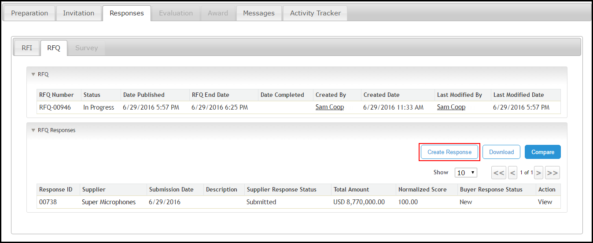
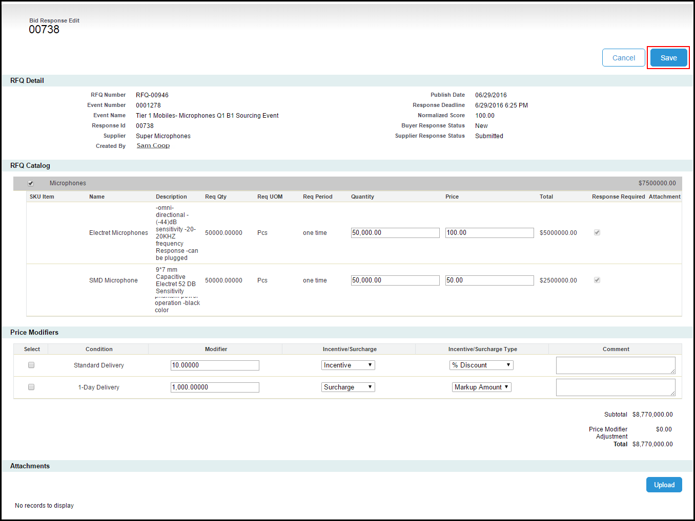
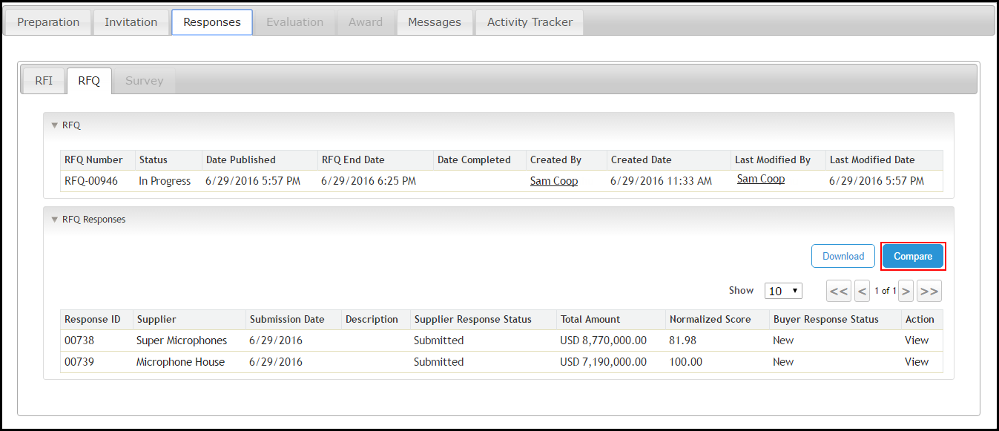
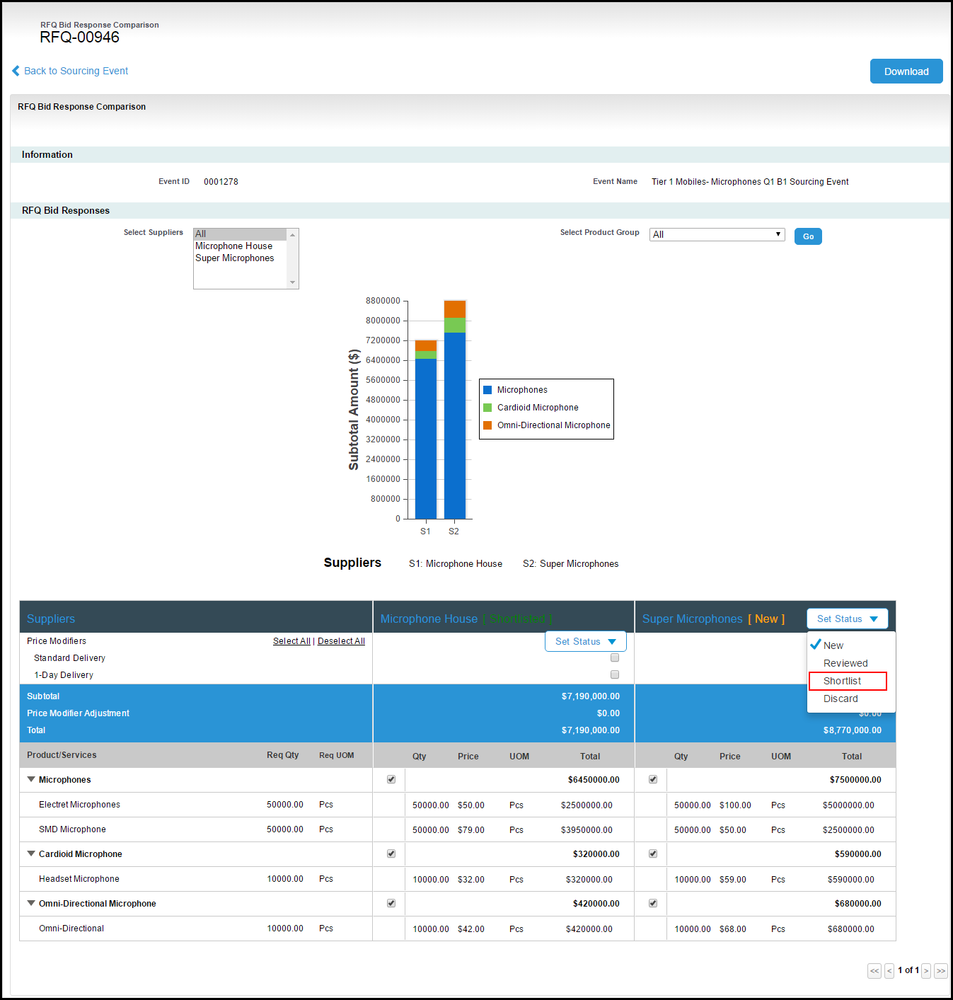
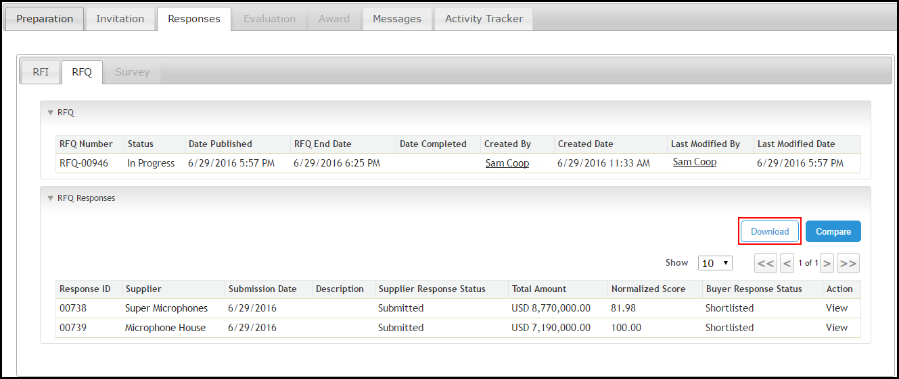

Managing RFQ Responses
RFQ Responses are the responses that are responded by the Suppliers in response to the RFQ sent by the buyer.
In our example, Sam sends the RFQ, and Rex and Kid respond to the RFQ.
The RFQ responses can be managed by
- Creating RFQ responses , if supplier has responded by any other source.
- Compare RFQ responses , to compare the responses submitted by the suppliers
- Download RFQ responses , to download the responses submitted by the suppliers
To create RFQ response for supplier
- Click the Sourcing Events tab.
- Select the appropriate sourcing event and click Edit.
-
Click Start RFQ.
Note:
Note
Skip this step if you have selected Auto Mode as your Event Mode Type in your sourcing event type. For Auto Mode, the phase progression is carried out automatically, based on the date and time mentioned in Milestones.
- Click theResponses tab and click the RFQ tab.
-
Click Create Response.

- Select the appropriate supplier from the Supplier drop-down menu.
- Complete the responses as mentioned by the supplier.
- To upload an attachment, click Upload.
- Click Choose File and select the appropriate file.
- Enter the File Name and Description.
- Click Attach.
-
Click Save.

-
To edit the response, click Edit
or
Click Back to Sourcing Event.
To compare RFQ response
- Click the Sourcing Events tab.
- Select the appropriate sourcing event and click Edit.
- Click the Responses tab and click the RFQ tab.
-
Click Compare.

- Click View to view the individual RFQ responses.
-
Select one option from Set As drop down menu as per the following table.
Option
Description
New
Selected by default.
Reviewed
Select Reviewed if you have reviewed the RFI response.
Shortlisted
Select Shortlisted if you have shortlisted this supplier.
Declined
Select Declined if you have declined this supplier.
Note:Note
Set As drop-down menu is visible only after the completion of RFI Deadline (Miletsones tab).

Note:Note
The Buyer Response Status will change according to the selected option in the Set As drop down menu.
- To download the responses, click Download.
- Click Back to Sourcing Event.
-
ClickComplete RFQ. You must shortlist at least one RFI and one RFQ in order to complete the RFQ phase.
Note:Note:
Note
A Phase Progression pop-up is displayed for the confirmation of completing the phase. Click Yes to proceed to next phase. Click No to continue working in the same phase.
Note:Note
Skip this step if you have selected Auto Mode as your Event Mode Type in your sourcing event type. For Auto Mode, the phase progression is carried out automatically, based on the date and time mentioned in Milestones.
To download RFQ response
- Click the Sourcing Events tab.
- Select the appropriate sourcing event and click Edit.
- Click the Responses tab and click the RFQ tab.
-
Click Download to download the responses of all the suppliers visible in RFQ Responses section.
Note:
Note
The RFQ Responses.xls file will start downloading. To view the downloaded file, click RFQ Responses.xls.
In order to download a response of any individual supplier, click View for the supplier you want to download the response, and then click Download.
